Assessment State Machine
Managing Assessment State Effectively
Christopher R. Bilger
January 14th, 2026
Agenda
- Problem Statement
- State Machine Overview
- Implementation Details
- Benefits and Outcomes
- Conclusion + Q&A

Problem Statement
- Complex assessment lifecycle with multiple states
- Challenges in managing transitions and ensuring consistency
- Need for a structured approach to handle state changes
- Consistency for analytics and reporting
- Difficulty in scaling changes in the assessment
Complex Assessment Lifecycle
- No clear boundary between happy, terminal, and error states
- Numerous events triggering state transitions
- Interdependencies between states and events
Challenges in Managing Transitions
- Inconsistent handling of state changes
- Increased risk of errors and mismanagement
- Difficulty in tracking state history and debugging issues
Need for a Structured Approach
- Clear definition of states and transitions
- Standardized handling of events
- Improved maintainability and scalability
Consistency for Analytics & Reporting
- Standardized logging, monitoring, and reporting
- Reliable data for performance metrics
- Accurate tracking of assessment outcomes
- Enhanced decision-making based on consistent data
Difficulty in Scaling Changes
- Complexity in updating state logic
- Increased effort for testing and validation
- Risk of introducing inconsistencies during changes
- Separation of concerns and modularity challenges
State Machine Overview
- Definition of a finite state machine (FSM)
- States involved in the assessment process
- Transitions between states based on events
- Responsibilities and actions of a state machine

What is a Finite State Machine?
- Set of data structures and design patterns
- Consists of a finite number of discrete states
- Used to model complex behaviors in a structured manner
- Transitions between states are triggered by events
- Provides clarity and predictability in system behavior
- Facilitates easier debugging and maintenance
States in the Assessment Process
- Initial State: Assessment not started
- In Progress: Assessment is being conducted
- Completed: Assessment has been finished
- Terminated: Assessment was terminated before completion
- Error: An error occurred during the assessment process
Screen Transitions Based on Events
- Root event tells the state machine to go to a new screen based on the current screen and some additional context
- Events include user actions (e.g., start, submit, terminate) and system events (e.g., error occurrence)
- Each event triggers a transition from one state to another, updating the assessment status accordingly
State Machine Navigation Observers
- Logging: Track state transitions and events for auditing purposes
- Monitoring: Observe state changes to ensure system health and performance
- Analytics: Generate reports based on assessment states and outcomes
- Persistence: Store state information to maintain continuity across webpage refreshes
State Machine Navigation Handlers
- Reusable components for verifying context between screen navigation
-
Validate navigation rules and conditions
- Handling invalid navigation attempts gracefully
-
Ensuring prerequisites are met before transitioning to a new screen
- Age check
- State check
- Guardian checks
- Schizophrenia check
- Suicide-risk check
State Machine Navigation Strategies
- Determine the appropriate navigation path based on current state and events
- Implement fallback strategies for unexpected states or events
- Optimize navigation for user experience and performance
- Modular and extensible design such that reusable is high between intake and referral assessments
Implementation Details
- Designing the state machine structure
- Handling state transitions and events
- Integration with existing systems
- Testing and validation strategies
- Extensibility and future enhancements

Benefits and Outcomes
- Improved consistency in assessment state management
- Reduced errors and mismanagement of states
- Enhanced clarity and maintainability of the assessment process
- Better scalability for future changes and enhancements
- Reliable data for analytics and reporting
- Informed decision-making based on consistent data

Conclusion + Q&A
- Problem Statement
- State Machine Overview
- Implementation Details
- Benefits and Outcomes
- Q&A

Additional Resources on Finite State Machines
Powered By
- A single, static webpage.
- reveal.js
- highlight.js